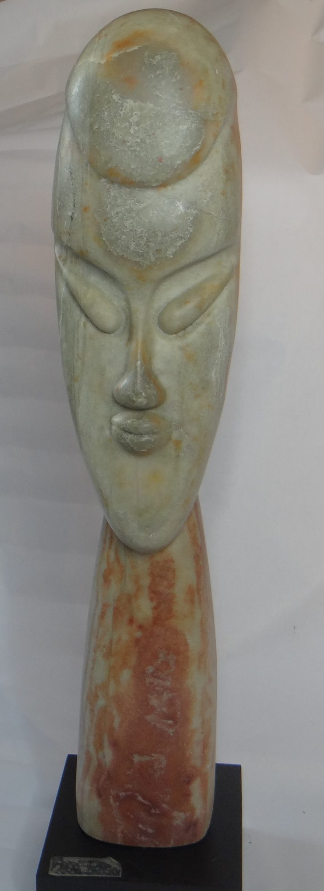

About Myra
A lifelong artist, Myra Lehman has been making sculpture for more than thirty years. She works in many materials: alabaster, marble, limestone and soapstone, hardwoods from black walnut to Hawaiian koa, and bronze and clay.
She studied with Ron Mineo, Sebastiano Mineo and Ira Chaffee at the Art Life Studio, and with Carla Rae Johnson at the County Center. In 1991 she worked at the Barsanti Studio in Pietrasanta, Italy, and returned to study in Carrara in September 2001.
In 1989 she had a one-person show at the Rye Free Reading Room. Her work was shown at the Mari Gallery in Mamaroneck in 1993, and at Our World Gallery in Stamford, Connecticut, with two painters in May 2001. Her sculptures are in private collections in New York, New Jersey, Connecticut, Ohio, Maryland, Virginia, California and the Netherlands.
Her work is inspired by travel to museums here and abroad. She follows her ideas toward minimalist abstraction, with attention to line and negative space. The themes are visualizations of mental processes and an expression of the characteristics of the materials.

Awards
| Year | Award | Exhibition |
|---|---|---|
| 2008 | First Prize Sculpture | Mamaroneck Artist's Guild |
| 2007 | First Prize Sculpture | Greenwich Art Society |
| 2007 | First Prize Sculpture | White Plains Woman's Club |
| 2007 | First Prize Sculpture | Art Society of Old Greenwich |
| 2006 | First Prize Sculpture | Rye Art Center |
| 2006 | First Prize Sculpture | Greenwich Art Society |
| 2006 | Third Prize Sculpture | Art Society of Old Greenwich |
| 2005 | Sculpture Prize | Bedford Art Show |
| 2004 | Sculpture Prize | Bedford Art Show |
| 2003 | Sculpture Prize | Bedford Art Show |
| 2003 | First Prize | Beaux Arts Finale |
| 2002 | Sculpture Prize | Bedford Art Show |
| 2002 | First Prize | Bedford Art Show |
| 2002 | First Prize | White Plains Woman's Club |
| 2001 | First Prize | Mamaroneck Artist's Guild |
| 2000 | Third Prize | Art Society of Old Greenwich |
| 1998 | First Prize | Art Society of Old Greenwich |
| 1997 | First Prize | Beaux Arts Finale |
| 1995 | First Prize | Pleasantville Woman's Club |
| 1993 | Club Award | Mamaroneck Artist's Guild |
| 1992 | Second Place | Salmagundi |
| 1992 | Second Place | Art Society of Old Greenwich |
| 1991 | Second Place | Mari Galleries, Juried Fine Arts |
| 1991 | First Prize | Mamaroneck Woman's Club |
| 1990 | Argos Award | Putnam Arts Council |
| 1988 | First Prize | Rye Woman's Club, Beaux Arts |